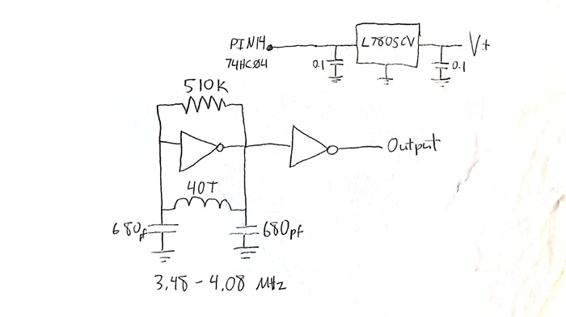
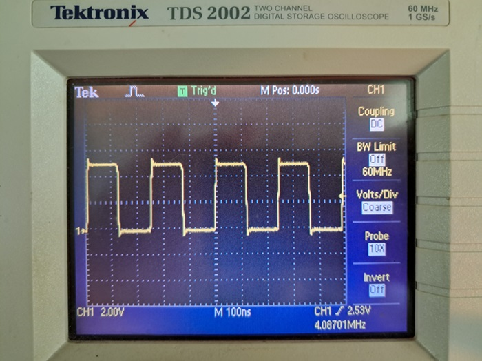

This was a quick experiment to test out a free-running CMOS VFO using my favorite "jelly-bean" part, the 74HC04 hex inverter. Many hams have untilized the hex inverter for crystal oscillators. With the availability of cheap ceramic resonators, a super VXO can cover a significant portion of the band. See for example:
GM0RWU-Ceramic Resonators for Cheap and Cheerful VFOs
The main limitation of this is the availability of ceramic resonators at necessary frequencies. I started wondering if the resonator could be replaced with a simple LC circuit to achieve similar results. It seemed reasonable, but google searching didn't show anyone else doing this in the QRP space at least. That being said, I make no claims to originality on this. I'm sure others have built similar VFOs. I just couldn't find them, so I'm documenting it here. I decided to try it out using an adjustable "PTO"-style coil form borrowed from Soldersmoke's DC receiver project. (My apologies to Bill and Dean for using their form in a circuit that is ONLY ICs.) My target frequency range was about 3.5 MHz to 4 MHz in order to pair with an 11 MHz IF for use on 7 MHz. 4 MHz ceramic resonators are actually available, but require a faily large variable capacitor to pull over that range. The main advantages of of using the printed coil form are low cost and being easier to fabricate at home.
The coil form stl file can be downloaded from the Soldersmoke DC receiver Hackaday.io page here.
L and C values were determined via the old fashioned cut-and-try method. Final range after adjustment was 3.48 MHz-4.08 MHz over about 28 turns of the 1/4-20 brass screw, which translates to about 21 kHz per turn. Linearity is... okay. No worse than a lot of varactor-tuned circuits I've tried. Much of this is controlled by coil turn spacing. Keep adjusting turn positions on the form until you get something you like. Bill and Dean suggest printing the form at 110%. It could just be my printer, but I found that to be slightly to small. I increased it to 111%, and that was perfect.
The output from the first inverter is run into a second that is used as a buffer. It outputs the expected square wave. Inputs for the other four unused inverters are grounded.
I eventually plan to utilize this in a simple 40 Meter superhet where I want to try out some circuits from W1FB's Design Book. I'll hopefully post more updates when I have a chance to do so.